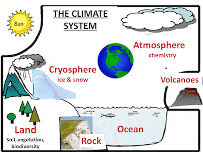

What Is Climate Change?
Climate change refers to significant, long-term changes in the global climate. The global climate is the connected system of sun, earth and oceans, wind, rain and snow, forests, deserts and savannas, and everything people do, too. The climate of a place, say New York, can be described as its rainfall, changing temperatures during the year and so on. But the global climate is more than the “average” of the climates of specific places.
What Is Climate system?
A description of the global climate includes how, for example, the rising temperature of the Pacific feeds typhoons which blow harder, drop more rain and cause more damage, but also shifts global ocean currents that melt Antarctica ice which slowly makes sea level rise until New York will be under water.It is this systemic connectedness that makes global climate change so important and so complicated.

What Is global warming?
Global warming is the slow increase in the average tempera ture of the earth’s atmosphere because an increased amount of the energy (heat) striking the earth from the sun is being trapped in the atmosphere and not radiated out into space. The earth’s atmosphere has always acted like a greenhouse to capture the sun’s heat, ensuring that the earth has enjoyed temperatures that permitted the emergence of life forms as we know them, including humans. Without our atmospheric greenhouse the earth would be very cold. Global warming, however, is the equivalent of a greenhouse with high efficiency reflective glass installed the wrong way around.

How Does Global Warming Drive Climate Change?
Heat is energy and when you add energy to any system changes occur. Because all systems in the global climate system are connected, adding heat energy causes the global climate as a whole to change. Much of the world is covered with ocean which heats up. When the ocean heats up, more water evaporates into clouds. Where storms like hurricanes and typhoons are forming, the result is more energy-intensive storms. A warmer atmosphere makes glaciers and mountain snow packs, the Polar ice cap, and the great ice shield jutting off of Antarctica melt raising sea levels..

What are the most important greenhouse gases(GHGs)?
The most common and most talked about greenhouse gases is CO2 or carbon dioxide. In fact, because it is so common, scientists use it as the benchmark or measure of things that warm the atmosphere. Methane, another important GHG, for example, is 28-36 times as warming as CO2 when in the upper atmosphere (USEPA GWP – Global Warming Potential – estimate over 100 years), therefore, 1 ton of methane = 28-36 tons eCO2 or CO2 equivalents.
What Is global warming?
Global warming is the slow increase in the average tempera ture of the earth’s atmosphere because an increased amount of the energy (heat) striking the earth from the sun is being trapped in the atmosphere and not radiated out into space. The earth’s atmosphere has always acted like a greenhouse to capture the sun’s heat, ensuring that the earth has enjoyed temperatures that permitted the emergence of life forms as we know them, including humans. Without our atmospheric greenhouse the earth would be very cold. Global warming, however, is the equivalent of a greenhouse with high efficiency reflective glass installed the wrong way around.

What is black carbon and how does it cause global warming?
Black carbon (BC) is tiny particles of carbon released as a result of the incomplete combustion of fossil fuels, biofuels and biomass. These particles are extremely small, ranging from 10 µm (micrometers, PM10), the size of a single bacterium to less than 2.5 µm (PM2.5), one thirtieth the width of a human hair and small enough to pass through the walls of the human lung and into the bloodstream. Although BC – think of the plume of smoke from a chimney or a fire – falls out of the lower atmosphere in days, while it is suspended in the air, it absorbs the sun’s heat millions of times more effectively than CO2. When wind carries BC over snow, glaciers or ice caps where it falls out onto the white, normally reflective surface, it is particularly damaging because it contributes directly to melting. Overall, BC is considered the second biggest contributor to global warming after CO2

What are the most important greenhouse gases(GHGs)?
The most common and most talked about greenhouse gases is CO2 or carbon dioxide. In fact, because it is so common, scientists use it as the benchmark or measure of things that warm the atmosphere. Methane, another important GHG, for example, is 28-36 times as warming as CO2 when in the upper atmosphere (USEPA GWP – Global Warming Potential – estimate over 100 years), therefore, 1 ton of methane = 28-36 tons eCO2 or CO2 equivalents.

What are the most important sources of GHGs and black carbon?
Fossil fuel and related uses of coal and petroleum are the most important sources of GHGs and black carbon (power generation, industry, transportation, buildings).Agriculture is the second most important source (animals – cows and pigs), feed production, chemical intensive food production, and flooded paddy rice production, as well as deforestation driven by the desire to expand cultivated areas. (New studies suggest that agriculture is the largest contributor of particulate emissions in the US and other developed agricultural countries.) Natural sources of GHGs and black carbon include forest fires, savanna fires and volcanos.
What evidence do we have of climate change?
The most compelling climate change evidence scientists have of climate change is long term data relating atmospheric CO2 levels and global temperature, sea level, the expanse of ice, the fossil record and the distribution of species. This data, which goes back millions of years, shows a strong correlation between CO2 levels and temperature. Recent data shows a trend of increasing temperature and rising CO2 levels beginning in the early 19th century. Because all parts of the global climate are connected, scientists have been able to create models of how changes caused by heating should work their way through the entire system and appear in different areas, for example, sea level, intemperate weather, the movement of fish species in the ocean.
WThe most commonly discussed GHGs are
CO2 or carbon dioxide is produced any time something is burned. It is the most common GHG, constituting by some measures almost 55% of total long-term GHGs. It is used as a marker by the United States Environmental Protection Agency, for example, because of its ubiquity. Carbon dioxide is assigned a GWP or Global Warming Potential of 1.